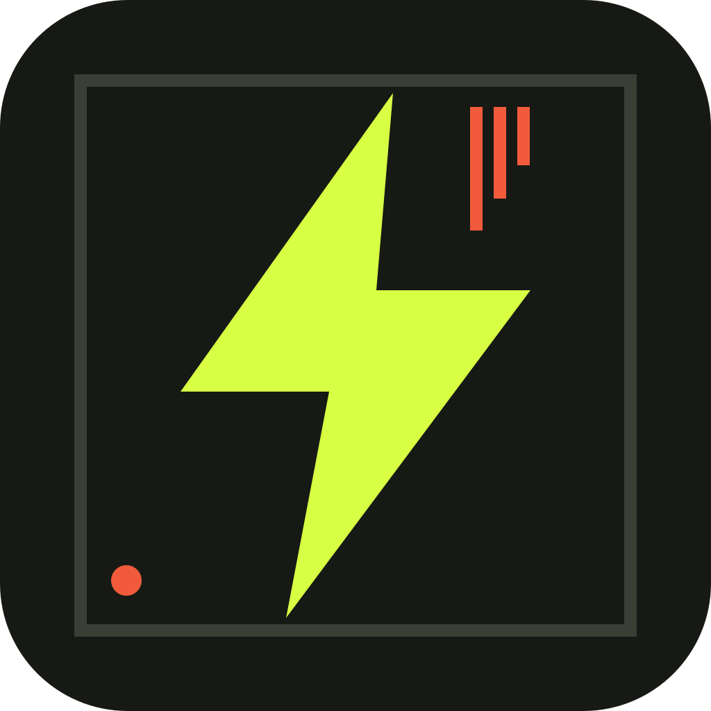

01
Your writing comes with you.
Bring in Markdown, a Substack export, or a public newsletter feed. Choose the posts you want. Review each one before publishing.

presskeep Get PresskeepA little independence
SIGNED PUBLISHING / MADE FOR MAC
A story, a newsletter, something worth saying.
Make it a signed document you can share
and keep. Wherever the internet goes next.
Mac & Linux · No account · US$9.99 once
Good writing deserves another copy.
01 / FROM A THOUGHT TO A KEEPSAKE
One ordinary document.
A life beyond any one platform.
YOUR DRAFT / YOUR DEVICE
A publication should be something you can hold onto. A file you can send to a friend, save on a drive, or find somewhere new.
The words are yours.
The copy should be, too.
Write in Presskeep, open a Markdown file, or bring over posts from a Substack export or public feed. Your imported writing starts as private drafts.
Download a signed sampleAn illustrative tour. The downloadable sample is a real signed Presskeep document.
02 / SMALL APP. LONGER SHELF LIFE.
For independent writers, reporters,
and anyone with something worth keeping.
Bring in Markdown, a Substack export, or a public newsletter feed. Choose the posts you want. Review each one before publishing.
Every edition carries proof of authorship. Readers can check that a copy comes from your publication and that its contents haven’t changed.
Revise a story without losing its history. Share a follow code so readers can find and verify new versions of your documents.
A finished document opens in an ordinary browser. No account, special reader, or internet connection needed to read a saved copy.
03 / THE DOCUMENT COMES FIRST
Presskeep saves your signed original before sending a single copy. Publish to a resilient archive, share the file directly, or keep it somewhere safe.
More copies mean more ways to find your work. You can see which destinations succeeded and retry the ones that didn’t.
No single address has to be the only address.
04 / A FEW GOOD QUESTIONS
Yes. Keep publishing wherever your readers are. Presskeep gives your work an independent, signed edition that you can keep and distribute alongside it.
They can read a saved .presskeep.html document in an ordinary browser. Presskeep adds signature verification, follow codes, update discovery, and an offline reading library.
A signature lets readers check that an edition came from the same publication and hasn’t been changed. It doesn’t encrypt the writing or prove that its claims are true. Readers should get your first follow code through a channel they already trust.
No tool can promise that. Presskeep helps you make independent copies and keep a complete original. Availability still depends on someone keeping and sharing those copies. Your saved files remain readable offline.
Presskeep can export an encrypted recovery file for your publication. Keep it somewhere separate from your computer, and keep its passphrase safe. You’ll need it to restore your ability to publish as the same publication.
Headings, paragraphs, lists, quotes, emphasis, links, code blocks, and embedded PNG or JPEG images. Finished documents contain no scripts, trackers, or automatically loaded remote resources. Presskeep deliberately keeps them simple and portable.
A SMALL TOOL FOR WHAT MATTERS
Start a publication. Make a signed edition.
Keep a copy that’s yours.
One-time purchase · macOS 11+ · Linux x86-64
Linux installation guide Explore all our apps